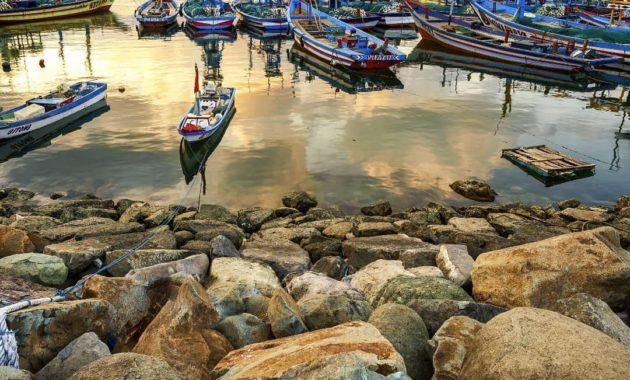
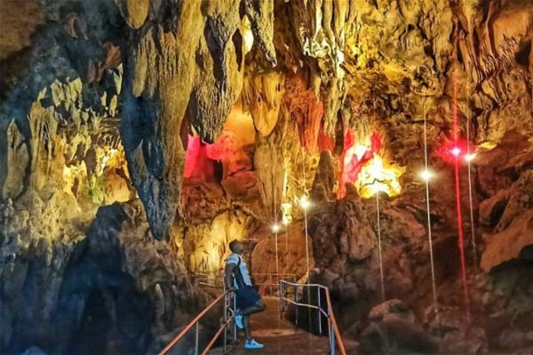

Detail
PESONA TRENGGALEK
Trenggalek Meroket "Berteman Hati"
Wisata No.1 di Kota Trenggalek
WELCOME TO TRENGGALEK
Wisata No.1 di Kota Trenggalek

WELCOME TO TRENGGALEK
Detail
Wisata No.1 di Kota Trenggalek

WELCOME TO TRENGGALEK
Detail
Upcoming Event
Days
Hours
Minutes
Seconds
Days
Hours
Minutes
Seconds
KBS Saat Ini
- cuaca:
- kecepatan angin :
- Suhu1 : ° C
Phone/email
- 08311973298
- wahyurohmatulabidin@gmail.com
- 0Jl. Raya Pasir Putih, Gares Kidul, Tasikmadu, Kec. Watulimo, Kabupaten Trenggalek, Jawa Timur 66382